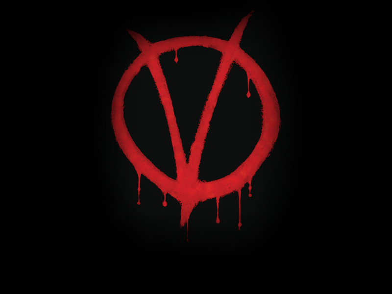

V for Vendetta, Typography with HTML5 & CSS3 - Best viewed in Google Chrome, Apple Safari or newer versions of Firefox (thanks to Derek Pomery). For more info click here.
Out of sync? Reload the page and play again, that'll do.
- Hugo Weaving (V)
-
I
can assure you,
mean you no
harm . . .
- Natalie Portman (Evey)
-
Who are you?
- Hugo Weaving (V)
-
Who ?
- Hugo Weaving (V)
-
Who is but the form
following the function of what
and what I am
is a man in a
MASK
- Natalie Portman (Evey)
-
Well
I can
see that - Hugo Weaving (V)
-
of
course
you can - Hugo Weaving (V)
-
I'm not questioning your powers of observation
I'm merely remarking upon
the paradox of asking a
masked man
WHO HE IS
- Natalie Portman (Evey)
-
oh right
- Hugo Weaving (V)
-
But on this most
auspicious
of nights
permit me thenin lieu of the more
commonplace sobriquetto suggest the character
of this dramatis persona - Hugo Weaving (V)
-
Voila!
- Hugo Weaving (V)
-
In view,
a humble
vaudevillian
veterancast
vicariouslyas both
victimand
villainby the
vicissitudesof
FATE - Hugo Weaving (V)
-
This
visageno mere
veneer
of
vanityis a
vestigeof the
vox populinow
vacantvanished
- Hugo Weaving (V)
-
However, this valorous visitation
of a by-gone vexation
stands vivified
- Hugo Weaving (V)
-
and
has vowed
to vanquish
these venal
and virulent
vermin
van-guarding
vice
and vouchsafing
the violently
vicious
andvoracious
violation
of
volition - Hugo Weaving (V) - [carves V into poster on wall]
-
- Hugo Weaving (V)
-
The only verdict is
vengeancea
vendetta
held as a
votivenot in vain
for the
value
and veracity
of such
shall one dayvindicate
the
vigilant and the
virtuous - Hugo Weaving (V) - [giggles]
-
Ha Ha Ha Ha Ha
- Hugo Weaving (V)
-
Verily this vichyssoise of verbiage veers most verbose
- Hugo Weaving (V)
-
so let me simply add that it's my very good honor to meet you and you may call me
- Hugo Weaving (V)
-

- Natalie Portman (Evey)
-
Are you like a
crazy person ? - Hugo Weaving (V)
-
I am quite sure they will say so
- Houke de Kwant
-
Thanks
for watching ! Houke de Kwant